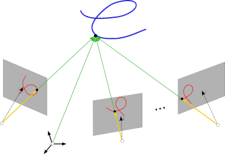
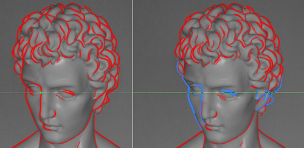

Research on Multiview Differential Geometry of Curves and Surfaces
Ricardo Fabbri and Benjamin Kimia
This project proposes a paradigm shift for 3D reconstruction from multiple perspective projections, based on differential geometry. We have been developing a new framework to model curved structures on both space and time, including general non-planar curves, surfaces, shading, curvilinear camera trajectories, and nonrigid motion.
State-of-the-art camera calibration and 3D reconstruction systems are based on very sparse point features, such as SIFT, and projective geometry, which can only model points and lines or simple curves such as circles and other conic sections. These systems suffer from many of the following limitations: sparsity, requirements of simple scene, controlled acquisition, difficulty with non-planar objects, requirement of strong calibration, abundant texture, short baselines, and lack of geometric consistency. We believe these systems are useful but form only a module within a greater structure from motion system.
Given two or more views of a fixed space curve, in 2004 we have shown how the torsion of the curve can be reconstructed from image measurements (pdf). Two views are necessary and sufficient, and more than 3 views provide an over-constrained solution. This initial study has opened an entire new line of research, where we have extended these results to most types of contours (rigid, occluding, nonrigid), and have been modeling many other problems involving curvilinear phenomena in the geometry of multiple views, including camera auto-calibration from tracked curves, the use of surface patches and their shading under different illumination models, and fields of both short and long curve fragments for multiview applications.

We are also working on a practical and comprehensive application for automatically reconstructing complex 3D objects from a sequence of images, and have completed many modules. One of our systems is based on image curve fragments as obtained from a subpixel edge linker. A simple step in corresponding curve fragments in two views is shown in the following figure, where the epipolar lines are in green:

Please check the website for Multiview 3D Drawings for a recent implementation presented in ECCV'16.A curve-based reconstruction has many advantages over point features:
- Curves are dense, and their geometric consistency allow for meaningful and recognizable multiview reconstructions of complex scenes, as compared to point clouds.
- Curves are intimately related to the geometry of the underlying surface, being useful in practice as a reliable constraints for surface-based reconstructions of general scenes.
- Curves as are strongly invariant to illumination.
We tackled the challenges of using linked curve fragments, namely the instabilities in linking and correspondence in the 3D Drawing system. The existence of multiple curve models (e.g. fixed, occluding, nonrigid), the trifocal bootstrapping of the system, and the surfacing of 3D Drawings are currently active topics.
Publications
- Multiview Differential Geometry of Curves,
International Journal of Computer Vision, 2016, with Ben Kimia. My most important theoretical work (pdf | code | bib)
new!
- The main result is the reconstruction of torsion and curvature derivative of a space curve from multiple perspectives, a fundamental theorem I proved in 2004 in the beginning of my Ph.D. This paper is the outgrowth of that effort, including continuous motion, non-rigid scenes, intrinsic parameters and camera estimation from occluding contours. It is the seed for a monograph I've been writing, a kind of an extended Hartley & Zisserman's book for general curves and differential geometry. For instance, if you need to reconstruct orientations from two or more views (SIFT orientations or other vector fields, including curvature and torsion fields), this is the place to go. The notation to deal with these problems is also the most up to date in this manuscript. Code is available as part of the code for the 3D curve drawing system.
- From Multiview Image Curves to 3D Drawings, ECCV 2016, with Anil Usumezbas & Ben Kimia, Expanded version available (pdf | supplement | code | datasets | website | bib) new!
- Camera Pose Estimation Using Curve Differential Geometry, ECCV 2012, Firenze, Italy, with Peter J. Giblin & Ben Kimia (pdf | supplementary | code | bib)
- Multiview Differential Geometry in Application to Computer Vision, my Ph.D. Thesis, School of Engineering, Brown University, 2010. Partly superseded by the above papers, still has much valuable insight (pdf | bib)
- 3D Curve Sketch: Flexible Curve-Based Stereo Reconstruction and Calibration, CVPR 2010, with B. Kimia. The practical basis of the 3D Curve Drawing work above (pdf | poster | code | website | bib)
<< home << 3D Drawings